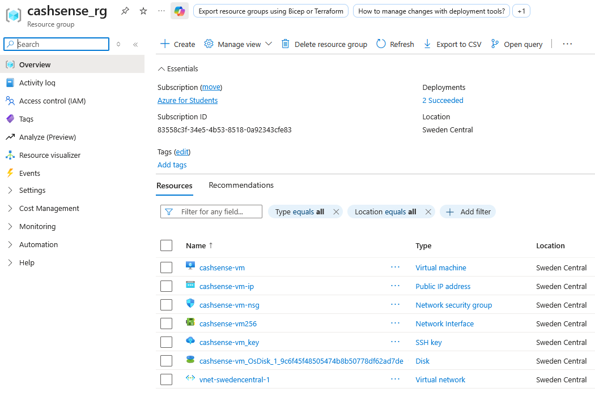

CashSENSE – Projektisuunnitelma
Verkkosovellus pk-yritysten ennakoivaan kassavirta-analyysiin
CashSense on kokeellinen DEMO -verkkosovellus, joka tuottaa pk-yritykselle kassavirtaennusteen yhdistämällä laskutiedot, asiakkaiden historiallisen maksukäyttäytymisen ja toimialan makrotaloudellisen kehityksen. Projektin tavoitteena on rakentaa toimiva, jatkuvasti verkossa oleva demo
Azure VM:lle sekä samalla käytännönläheinen työnäyte agenttisesta ohjelmistokehityksestä ja pilvijulkaisusta.
Projekti on vielä aloitus - kehitysvaiheessa, ja lopullinen versio julkaistaan myöhemmin.
Tämän dokumentin tarkoitus on kuvata projektin arkkitehtuuri, kehityspolku ja hyväksyntäkriteerit.
Tulevaisuuden AI-FEATURET
-
AI-myyntiennuste
Ennustaa tulevaa myyntiä historiadatan ja trendien perusteella.
-
AI-makrotalousennuste
Ennustaa makrotalouden kehitystä ja sen vaikutusta yrityksen myyntiin ja kassavirtaan.
-
AI-skenaariot
Muodostaa vaihtoehtoisia myynti- ja kassavirtanäkymiä eri taloustilanteissa.
-
AI-käyttöpääomaennuste
Ennustaa tulevaa käyttöpääoman tarvetta.
-
AI-luottotappioennuste
Ennustaa tulevia luottotappioita myynti- ja maksukäyttäytymisen perusteella.
-
AI-ennusteen jatkuva oppiminen
Vertaa ennusteita toteutuneeseen kehitykseen ja parantaa mallia uuden datan perusteella.
Perinteinen kassavirtaennuste olettaa usein, että lasku maksetaan eräpäivänä. CashSense parantaa ennustetta ottamalla huomioon kaksi keskeistä tekijää:
- 1.1 Asiakkaan maksukäyttäytyminen: Historialliset viiveet huomioidaan asiakaskohtaisesti arvioidussa maksupäivässä.
- 1.2 Toimialan makrotaloudellinen kehitys: Toimialan suhdanne-ennusteet (StatFin) korjaavat maksuaikojen venymistä.
DEMO 1.0 ei käytä tekoälyä itse sovelluksessa. Claude Codea käytetään projektin suunnitteluun, koodaukseen, testaamiseen ja dokumentointiin.
Itse sovellus perustuu Python-laskentaan ja tilastolliseen analyysiin. StatFin-dataan ja FastAPI-rajapintaan.
cashsense/
├── app/
│ ├── api/ # FastAPI reitit
│ ├── engine/ # Kassavirta- & makrolaskenta
│ ├── data/ # StatFin integraatio
│ └── models/ # Pydantic schemas
├── frontend/ # HTML/CSS/JS UI
├── data/ # Synteettinen laskutusdata
├── tests/ # Automaattiset testit
└── docs/ # Arkkitehtuuridokumentaatio
| Kriteeri | Kuvaus | Tila |
|---|---|---|
| GitHub Repository & CI | Koodikanta hallittu Gitillä, GitHub Actions ajaa automaattitestit. | Kesken |
| Laskentamoottori (Engine) | Yhdistää perinteisen, käyttäytymispohjaisen ja StatFin-makroennusteen. | Kesken |
| FastAPI & Frontend | REST API syöttää reaaliaikaista dataa selaimen käyttöliittymälle ja graafeille. | Kesken |
| Pilvijulkaisu (Azure VM) | Nginx, systemd ja HTTPS varmistavat jatkuvan ja turvallisen tuotantoajon. | Kesken |
Projektin tässä vaiheessa Azure-ympäristö on pystytetty cashsense_rg -resurssiryhmään Sweden Central -alueelle (Azure for Students -tilauksella, ilmaiset creditit).
Ympäristö sisältää sovelluksen ajoon ja verkkoyhteyksiin tarvittavan infrastruktuurin:
- cashsense-vm: Virtuaalipalvelin (Ubuntu Linux), jolla Nginx ja FastAPI-sovellus ajetaan.
- cashsense-vm-ip: Julkinen IP-osoite ulkoista liikennettä varten.
- cashsense-vm-nsg: Verkkoturvaryhmä (NSG), joka suodattaa saapuvan liikennettä (SSH/HTTP/HTTPS).
- vnet-swedencentral-1 & cashsense-vm256: Virtuaaliverkko ja verkkokortti (NIC).
- cashsense-vm_key: SSH-avain turvalliseen etähallintaan.
- cashsense-vm_OsDisk_...: Virtuaalikoneen OS-levymuisti.

Azure VM valmisteltiin ennen varsinaisen CashSense-sovelluksen käyttöönottoa. Tämä dokumentti kuvaa valmistuksen eri vaiheet.
- Azure for Students -tili – käytetty ilmaisten etusitinten saantiin.
- Alue: Sweden Central (Azure for Students -politiikka ei sallinut North Europe -aluetta).
- Resource Group: cashsense-rg-se
- VM: cashsense-vm
- Käyttöjärjestelmä: Ubuntu Server 24.04 LTS
- Arkkitehtuuri: x64 Gen2
- VM-koko: Standard_B2ts_v2 – 2 vCPU, 1 GiB RAM, Standard SSD
- Verkko: Public IP, NSG käytössä, SSH-avainautentikointi.
SSH-yhteys Windows-koneelta VM:lle saatiin toimimaan seuraavilla asetuksilla:
- Käyttäjä: ADcashsense
- Avain: .pem-avain Windowsin tiedostojärjestelmään
- Oikeudet: Windowsin avaimen käyttöoikeudet korjattiin
icacls-komennolla.
Yhteys toimii komennolla:
ssh -i "F:..\nimi_key.pem" adminkäyttäjä@<IP>
Alkuvalmisukset tarkistettiin ja järjestelmä päivitettiin:
Ubuntu 24.04.4 LTS
Python 3.12.3
Git 2.43.0
Python venv
Päivitys suoritettiin komennoilla sudo apt update ja sudo apt upgrade -y.
Azure-kernelin päivityksen jälkeen VM käynnistettiin uudelleen ja SSH-yhteys varmistettiin uudelleen.
mkdir -p ~/cashsense
Sijainti: /home/ADcashsense/cashsense. Hakemiston omistajuus tarkistettiin ja se on käyttäjän ADcashsense hallinnassa.
sudo ufw allow OpenSSH
sudo ufw enable
Tällä hetkellä sallittu liikenne on vain OpenSSH (portti 22). Portteja 80 ja 443 ei vielä avattu.
sudo apt install -y fail2ban
Palvelun tila on active (running). Fail2ban suojelee esimerkiksi SSH-palvelua kirjautumisyrityksiltä.
sudo apt install -y nginx
Nginx on asennettu ja käynnissä (active (running)). Sitä ei vielä konfiguroitu CashSensea varten.
FastAPI-porttia 8000 ei ole tarkoitus avata Internetiin. Silloin myös /api/-reitit Nginxin kautta.
Julkaistussa CashSense-palvelussa käytetään HTTPS:ää Nginxin ja Let's Encrypt -sertifikaatin yhteydessä. (portit ei avoinna vielä)
| Portti | Käyttö |
|---|---|
| 22 | SSH |
| 80 | HTTP ↝ HTTPS -ohjaus |
| 443 | HTTPS / Nginx |
| 8000 | FastAPI, vain localhost |
Tärkeää: CashSense-sovellusta ei ole vielä asennettu VM:lle.
- FastAPI-sovellusta
- Python virtual environmentia CashSensea varten
requirements.txt-asennusta- systemd-palvelua
- Nginx CashSense-konfiguraatiota
- domainia / DNS:ää
- HTTPS-sertifikaattia
- Azure-porttien 80/443 avaamista
- GitHub Actions -deploymentia
- Dockeria (eikä tehdä demo 1.0 VM ympäristössä)
Ubuntu 24.04 ✓
├── Python 3.12 ✓
├── Git ✓
├── SSH ✓
├── UFW ✓
├── Fail2ban ✓
├── Nginx ✓
└── ~/cashsense ✓
Seuraava vaihe on CashSensen rakentaminen paikallisesti, jonka jälkeen sovellus siirretään Gitin kautta VM:lle.